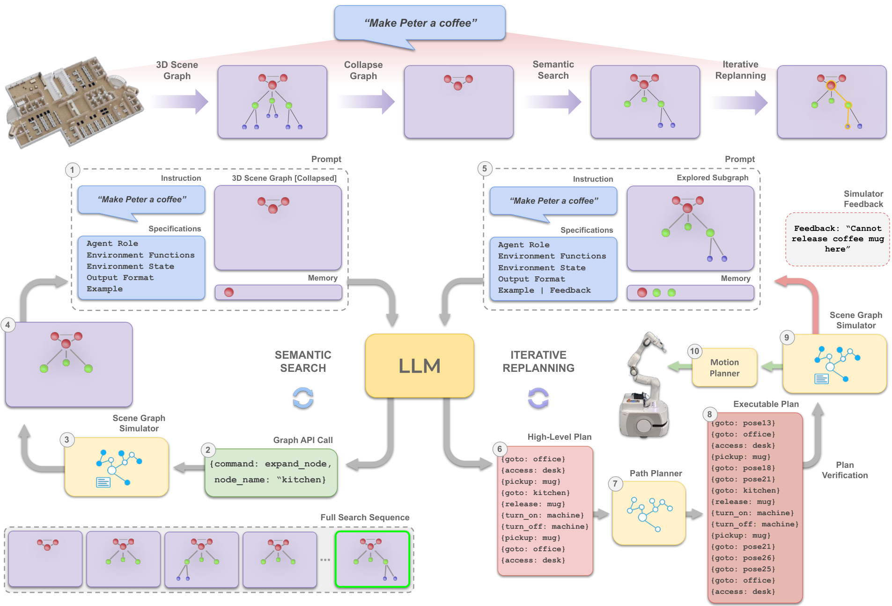

SayPlan
先在场景图里找出相关世界，再让规划器解决具体路径与动作前置条件。
SayPlan: Grounding Large Language Models using 3D Scene Graphs for Scalable Robot Task Planning
长程规划：SayPlan 的计划可执行率 86.6%，LLM-As-Planner 为 13.3%；这不是实机任务成功率。
01这篇要解决什么？
多房间机器人面对的是一栋楼，而不是一张桌子。把完整地图、物体清单和每一步移动都塞入上下文，会迅速扩大搜索空间。SayPlan 用分层三维场景图让语言模型按需展开相关区域，并把路径计算交给经典规划器。
02先看一个场景
指令是“把二楼会议室的杯子拿到一楼厨房”，环境是一栋多楼层多房间的建筑（论文的 Home 环境有 3 层、28 个房间、112 件资产与物体）。把所有房间、家具与物体一次塞进上下文，光是办公室环境的完整场景图就有 6731 tokens，而其中绝大部分与这个杯子无关。
03方法怎样运转？

- 01
先有一张可折叠的三维场景图
3DSG 是一个 NetworkX 图，序列化成 JSON 交给模型，分楼层、房间、资产、物体四层，另有一个动态 agent 节点和一串记录可通行拓扑的 pose 节点。论文假设这张图由已有的建图方法预先构建，不属于本文训练的内容。场景图模拟器 ψ 提供 collapse / expand / contract 三个 API：collapse 后只暴露最上层，办公室环境的完整图有 407 个节点、6731 tokens，折叠后剩 105 个节点、878 tokens。
- 02
语义搜索：模型调 API 自己展开子图
语言侧是现成的 GPT-4，不做任何微调。静态提示包含角色设定、场景图说明、输出格式与若干输入输出示例，约 3900 tokens，且与具体任务和环境无关。模型每一步输出一个 JSON，给出 expand 或 contract 以及节点名，由模拟器执行后把更新过的图回传；已展开过的节点记在 Memory 里一并输入，既避免重复展开，也使每一步不必携带完整交互历史。搜索由模型自己输出 terminate 结束。
- 03
因果规划：只写房间级动作，路径交给 Dijkstra
在搜索得到的子图上，模型只需要生成节点级的导航与操作动作，例如 goto(meeting_room)、access(fridge)、open(fridge)。pose 与 pose 之间怎么走由最优路径规划器（Dijkstra）补成完整计划。这一步是刻意缩短模型的规划视野，把细粒度搜索从语言模型手里拿走。
- 04
图模拟器校验，用文字反馈重规划
verify_plan 在场景图层面把整条计划前向模拟一遍，检查是否符合图的谓词、状态与 affordance：手上已经拿着东西、机器人不在正确位置、冰箱没有先打开，都会判为失败。失败被转写成一句文本（如 cannot pick banana）追加进提示，让模型重写计划，循环到反馈为 success 为止；全部实验把重规划次数上限设为 5。通过校验的计划才交给底层视觉引导的运动控制器。
G0 = collapse(scene_graph) # 只留楼层/房间层：办公室 6731 → 878 tokens
memory = [] # 已展开节点，避免重复且无需传完整历史
while True: # 阶段一 语义搜索：GPT-4 输出 JSON 调用图 API
cmd, node = LLM(static_prompt, G0, instruction, memory)
if cmd == 'terminate': break
G0 = expand(node) if cmd == 'expand' else contract(node); memory += [node]
feedback = ''
for _ in range(5): # 阶段二 因果规划：重规划上限 5 次
plan = LLM(static_prompt, G0, instruction, feedback) # 只写房间级动作
full_plan = dijkstra_fill(plan, G0) # pose 级路径交给路径规划器
feedback = verify_plan(full_plan) # 查谓词 / 状态 / affordance
if feedback == 'success': break
execute(full_plan) # 通过校验后才交给底层视觉引导控制器方法与结果的原文定位见本页引用。
04跟着这个场景走一遍
教学推演：回到上面的场景。第一步，整张图先被 collapse，模型看到的只有楼层与房间这一层，而不是全部节点——在办公室环境里，这一步把 6731 tokens 压到 878 tokens。第二步，模型按房间名与属性判断哪里可能有杯子，输出形如 {command: expand, node_name: meeting_room} 的 JSON；模拟器展开该节点并回传新图，若里面没有相关物体，模型再输出 contract 把它收起，展开过的房间进入 Memory 不再重复访问；等会议室的杯子和厨房的目标位置都进入子图，模型自己输出 terminate。第三步，模型在这个小子图上只写高层动作序列，例如 goto(meeting_room)、pickup(cup)、goto(kitchen)、release(cup)，楼层之间与 pose 之间的路线由 Dijkstra 补齐。第四步，模拟器把补全后的计划整条走一遍：若杯子在一个需要先打开的柜子里，或机器人手上还握着别的东西，就返回一句「cannot pick cup」之类的文本，追加进提示让模型重写，最多重写 5 次。需要留意的是这整套循环都发生在图里：模拟器只检查图上的谓词是否满足，它不知道真实杯子此刻是否还在那个位置，也不检验抓取会不会失败。这正是 RoboOS 那类共享场景记忆要接手的问题——图不仅要缩短上下文，还必须随机器人行动更新。
05实验到底表现怎样？
两个大规模环境覆盖多楼层、房间和资产；论文将语义搜索与因果规划分开评估。正确性 Corr 关心是否完成所要求的目标，可执行性 Exec 关心动作是否满足环境约束。
作者报告的实验结果 · v2
| 表 3 · 长程规划 | 正确性 Corr | 可执行性 Exec |
|---|---|---|
| LLM+P | 33.3% | 0.0% |
| LLM-As-Planner | 66.7% | 13.3% |
| SayPlan | 73.3% | 86.6% |
原始证据：方法：§3（PDF 第 4–5 页） ↗ · 搜索与规划：表 1–3（第 6–7 页） ↗ · 限制：§6（第 8 页） ↗
86.6% 可执行率高于 73.3% 正确率并不矛盾：一个计划可以合法执行，却没有正确满足用户意图。表 2 中办公室图的表示从 6731 tokens 缩到 878，展示的是按需展开对上下文规模的帮助。
06收益来自哪里，又停在哪里？
消融与机制证据
两种规划基线与完整系统的差异表明，路径补全和模拟反馈有助于减少缺失动作、位姿等错误。语义搜索仍会受模型能力限制：GPT-4 在简单 / 复杂搜索中为 86.7% / 73.3%，不是总能找到合适子图。
结论的适用边界
模型来源在这篇里很集中：语言侧是现成的 GPT-4，不做任何微调，静态提示约 3900 tokens 且与任务和环境无关，换成 GPT-3.5 后语义搜索明显变差；系统其余部分都不是学出来的——三维场景图假设由已有建图方法预先构建，collapse / expand / contract / verify_plan 是手写的图 API，导航用 Dijkstra，实机演示中的 pick、place、open、close 由运动控制器配合 RGB-D 抓取检测与行为树实现。因此前提成本不在训练，而在「必须先有一张准确且最新的场景图」。核心量化结果也来自场景图层面的搜索与规划评估，真实机器人执行仅作展示；不能把图模拟中的可执行率当成抓取、导航和感知误差共同作用下的实机成功率。
07放回全书的脉络
RoboOS 的共享场景记忆可以与这篇一起理解：图不仅缩短上下文，还必须随机器人行动更新，否则更精巧的搜索也会建立在过期事实上。
08把阅读变成一个小研究
用 JSON 构造楼层—房间—物体树。比较完整展开与按需展开在相同任务上的 token 数、漏检对象和计划正确率。
先自己回答：这项实验怎样才有解释力？
增加“物体已被搬走”的情形，能把静态搜索与状态维护分开。若图不更新，检索速度再快也无法保证计划正确。
- 用自己的话说出这篇改变了哪个模块。
- 画出它的输入、输出和一次失败如何被处理。
- 复述一个结果，同时说清基线、指标与实验条件。这一问不给答案，材料在第 05 节。
先自己答，再看前两问的参考答案
这篇改了哪个模块改动落在世界的表示和规划视野上：一栋楼的信息被组织成一张可折叠的三维场景图，语言模型靠 collapse / expand / contract 按需取出与任务相关的子图，再只负责写房间级动作，pose 之间怎么走交给 Dijkstra；另外补了一个图模拟器，用来在执行之前校验计划。没有改的部分同样明确——场景图假设由已有建图方法预先构建，那几个图 API 与 verify_plan 都是手写的，底层的 pick、place、open、close 仍由原有的运动控制器完成，语言侧是现成的 GPT-4，没有训练任何权重，也没有改动作空间。
输入、输出与一次失败如何被处理输入是一句自然语言指令与序列化成 JSON 的三维场景图，模型每一轮只看到当前折叠状态下的图，外加一份记录已展开节点的 Memory 和与任务、环境都无关的静态提示；这张图不是模型感知出来的，由外部建图方法预先提供。输出分两段：语义搜索阶段输出 expand / contract / terminate 这类 JSON 命令，由场景图模拟器执行并回传更新后的图；因果规划阶段输出 goto、access、open 这样的房间级动作序列，再由 Dijkstra 补成 pose 级完整计划，通过校验后才交给底层视觉引导的运动控制器。失败由 verify_plan 发现，它在图上把整条计划前向模拟一遍，依据是图的谓词、状态与 affordance，不成立就把原因转写成一句文本追加进提示让模型重写，重规划上限为 5 次。要留意这条通路全部发生在执行之前：模拟器只检查图上的事实，论文假设建图之后物体保持静止，因此真实执行中抓取失败或物体已被搬走并不会回传给规划器（实机演示里的失败恢复由技能层的行为树处理，不进入这一层）。
先在场景图里找出相关世界，再让规划器解决具体路径与动作前置条件。
↗带着位置回到原文
首发日期用于时间排序；以下方法与结果对应 v2。数据为论文作者报告，本讲义没有独立复现实验。
QA就这一页提问或讨论
对某个数字、某条边界或某个推演有疑问，欢迎直接留言：讨论按页面分开，回复会保留在 XinrunXu/awesome-agentic-robotics-papers 的 Discussions 里，需要一个 GitHub 账号。